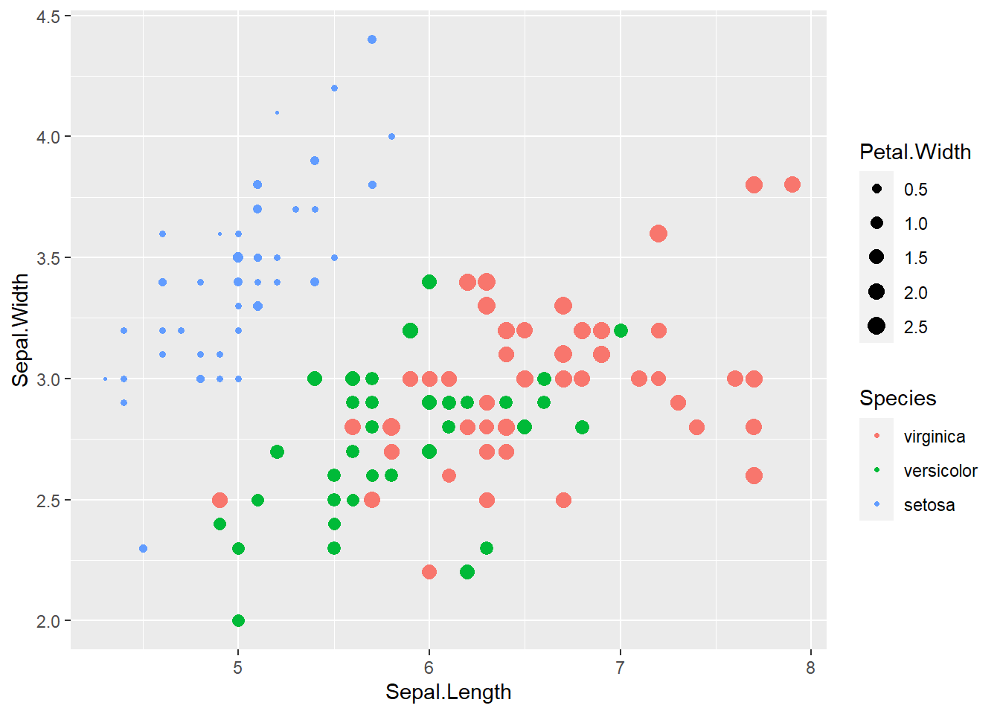
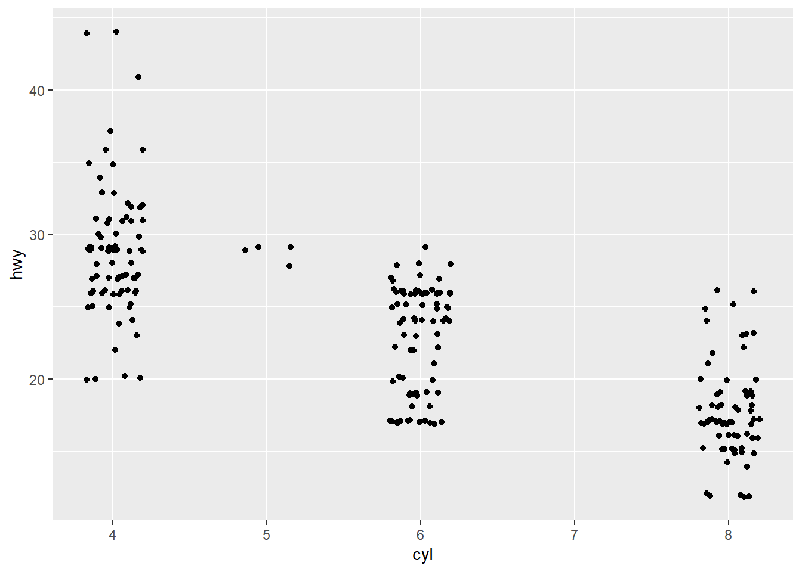

Chapter 3 資料視覺化
資料視覺化是分析資料前相當重要的步驟，能夠將雜論無章的數據彙整為具有統計意義的圖，進而觀察資料趨勢與潛在的意涵；同時也是在資料分析後，用以呈現產出結果的重要手段，進而貫串整個分析的主題與故事。本章節介紹 R 語言中資料視覺化的方法，其中側重於ggplot2套件的使用，分別介紹不同圖表的應用與程式撰寫方式，並詳述圖表細節之設定，進而使圖表的呈現更加細緻與客製化。
ggplot2套件是在 R 語言中最為常見的繪圖工具，此名稱中的「gg」意謂著「Grammar of Graphics」，亦即使用此套件繪圖時乃依據特定的規則，如同語言中的「文法」。ggplot2套件提供多種不同的函式可繪製各類型圖表，並可進一步細緻調整圖表樣式，提升資料之可視性。
ggplot2繪圖方法主要由四個元素構成：資料與座標軸、圖表類型、尺度設定、主題設定，繪圖架構如圖3.1所示。

圖 3.1: ggplot2繪圖架構
以圖3.2為例，各元素所控制的圖片要素彙整如下：
- 資料與座標軸： 所輸入的資料為鳶尾花（iris）資料、設定花萼的長度（Sepal.Length）為橫軸；花萼的寬度（Sepal.Width）為縱軸
- 圖表類型： 使用點子圖
- 尺度設定： 將花瓣的寬度（Petal.Width）給定漸層顏色、將花瓣的長度（Petal.Length）給定點子大小
- 主題設定： 設定座標軸文字的顏色與大小、設定圖例的文字大小、粗細與背景顏色

圖 3.2: 繪圖範例
本章僅介紹常見的圖表，並系統性彙整ggplot2套件的作圖概念，惟無法涵蓋所有圖表繪製與細節調整，建議可以直接在網路上利用關鍵字（盡可能用英文關鍵字，所得到的回饋會更多、更完整）搜索，藉此模仿他人的程式碼，並從中學習作圖技巧。此外，以下羅列非常豐富的 R 繪圖相簿，內含完整的程式碼可供觀摩：
3.1 圖表類型
圖表類型彙整
本節彙整常見的圖表類型（如表3.1），並介紹各圖表繪製方法，利用不同的資料視覺化呈現。
| 圖表類型 | 特徵/應用 | 套件 | 函式 | 圖示 |
|---|---|---|---|---|
|
散布圖 Scatter Plot |
|
ggplot2
|
geom_point()
|

|
|
折線圖 Line Chart |
|
ggplot2
|
geom_line()
|
|
|
長條圖 Bar Chart |
|
ggplot2
|
geom_bar()
|

|
|
直方圖 Histogram |
|
ggplot2
|
geom_histogram()
|

|
|
密度圖 Density Plot |
|
ggplot2
|
geom_density()
|

|
|
圓餅圖 Pie Chart |
|
ggplot2
|
geom_bar() + coord_polar()
|

|
|
盒狀圖 Box Plot |
|
ggplot2
|
geom_boxplot()
|
|
|
小提琴圖 Violin Plot |
|
ggplot2
|
geom_violin()
|
|
|
氣泡圖 Bubble Plot |
|
ggplot2
|
geom_point()
|
|
|
山脊圖 Ridgeline Plot |
|
ggridges
|
geom_density_ridges()
|

|
|
熱力圖 Heat Plot |
|
ggplot2stats
|
geom_tile()
|

|
|
矩形式樹狀圖 Treemap |
|
treemapifytreemap
|
geom_treemap()
|
|
|
桑基圖 Sankey Diagram |
|
ggalluvialggsankey
|
geom_density_sankes()
|
|
|
雷達圖 Radar Chart |
|
ggradar
|
ggradar()
|
|
|
三元圖 Ternary Plot |
|
ggternTernary
|
geom_ternary()
|
|
| Note: | ||||
套件欄位中的粗體字為可以與ggplot2套件整合者
|
初始化
如前文所提，ggplot2是依循著繪圖文法的套件，其最基礎的元素即是資料與座標軸，也就是繪製各類型圖表前的「畫布」，可利用ggplot()函式生成之，函式撰寫架構如下。
其中的aes表示「aesthetics（美學）」，用以定義圖表中需要「座標」的資訊。舉例而言，繪製圖表的點與線時必須要有座標，因此x=與y=兩引數務必放置於aes()函式中。而若希望不同資料點或線具有不同顏色、粗細、大小等，則須透過「座標」控制之，此時亦應在該函式中設定之。
以iris鳶尾花資料為例建立畫布，並以 Sepal.Length 為橫軸、Sepal.Width 為縱軸，設定最基礎的畫布，程式碼撰寫如下。

圖示設定
在 R 語言中各類型圖表皆可能需要設定其形狀（shape）、線條樣式（linetype）、顏色（color）等，以下簡介各設定之代碼。
點的形狀在 R 語言中共 26 個預設代碼，詳列如圖3.3，可直接設定數字使用符號。此外，亦可自訂代碼，如設定「"X"」，即表示使用「X」符號。
圖 3.3: 點形狀代碼
線條樣式在 R 語言中共 7 個預設代碼，詳列如圖3.4。
圖 3.4: 線條樣式代碼
在 R 語言中顏色的設定可以直接輸入預設的顏色名稱，詳列如圖3.5，抑或直接透過十六進位值色碼，請參考色碼表。
圖 3.5: 顏色代碼
有了上述對於圖表的基本認識後，接下來就讓我們用各種不同資料與案例說明各圖表的功能及程式撰寫方式。
3.1.1 散布圖
散布圖（Scatter Plot）應用於表達兩個連續變數之間的關係，橫軸與縱軸分別代表不同的連續變數，並利用點表示此二連續變數在二維空間的分布，可利用geom_point()函式達成之，函式撰寫架構如下。
以上各引數的功能彙整如表3.2。
| 引數 | 功能設定 | 說明 |
|---|---|---|
color=
|
設定點的顏色 | 請參考顏色設定 |
shape=
|
設定點的形狀 | 請參考形狀設定 |
size=
|
設定點的大小 | 數值 |
stroke=
|
設定點外圍框線的粗細 | 數值，僅有空心形狀者（如形狀設定為 21~25 者）尚有效 |
fill=
|
設定點內部的顏色 | 請參考顏色設定，僅有空心形狀者（如形狀設定為 21~25 者）尚有效 |
alpha=
|
設定點的透明度 | 數值，介於 0（完全透明）與 1（完全不透明）間 |
⌾ 基礎散布圖
以iris資料為例，以花萼的長度（Sepal.Length）為橫軸，花萼的寬度（Sepal.Width）為縱軸，繪製散布圖，程式碼撰寫如下。

⌾ 修正散布圖樣式
若希望更動點的樣式，可利用表3.2的引數控制之。
ggplot(iris, aes(x=Sepal.Length, Sepal.Width))+
geom_point(color="red", shape=23, size=3, stroke=1, fill="#AE57A4", alpha=0.5)⌾ 漸層樣式散布圖
散布圖一般而言僅能表示二維的數據，且大多是連續變數，然而若能在點子上給定顏色或大小，則可進一步顯示更多維度的資料。漸層樣式散布圖中，須依據資料隨之變動的樣式，其引數設定必須置於aes()函式內；反之，若樣式不會隨資料變動，則須放置於aes()函式外。
承繼上述案例，若希望用顏色表示品種（Species），並以點子的大小表示花瓣的長度（Petal.Width），而點子的形狀皆固定為圓點（引數需置於aes()函式外），程式碼撰寫如下。
ggplot(iris, aes(x=Sepal.Length, Sepal.Width))+
geom_point(aes(color=Species, size=Petal.Width), shape=20)圖中「品種」為類別型資料；「花瓣的寬度」為連續型資料，透過漸層樣式散布圖可表達更多維度的資料，添增資訊的豐富度。觀察出圖結果可發現，setosa 類別（ 紅色點子）的花瓣寬度（點子大小）與花萼長度（橫軸）相較於另兩品種偏小，有相當明顯的區別。因此透過漸層樣式散布圖可初步觀察對於資料分類的重要影響變數，為資料科學的關鍵步驟。
若希望修正顏色漸層，請參考此；若希望修正點子大小之漸層，請參考此。
⌾ 加入趨勢線
點子圖通常用以表示兩連續變數的關係，可從中推敲其趨勢，繪圖時可另考量繪製趨勢線，有助於引導閱讀者瞭解變數間的關係。趨勢線可透過geom_smooth()繪製，函式撰寫如下。
以上各引數的功能彙整如表3.3。
| 引數 | 功能設定 | 說明 |
|---|---|---|
method=
|
設定趨勢線迴歸模型 |
可使用線性迴歸（lm）或一般化線性迴歸（glm）
|
formula=
|
設定迴歸函式 |
預設為y~x
|
se=
|
設定是否回傳趨勢線的標準誤 |
預設為T，若不希望有標準誤，須設定F
|
level=
|
設定信心水準 |
預設為 95% (0.95) 之信心水準
|
span=
|
設定迴歸的區間 | 迴歸區間，若區間愈大，線條愈平滑；若區間愈小，線條愈趨近原資料分布 |
color=
|
設定趨勢線顏色 | 請參考顏色設定 |
linetype=
|
設定趨勢線樣式 | 請參考線條樣式設定 |
linewidth=
|
設定趨勢線粗細 | 數值 |
fill=
|
設定趨勢線標準誤範圍的顏色 | 請參考顏色設定 |
alpha=
|
設定趨勢線標準誤範圍的透明度 | 數值，介於 0（完全透明）與 1（完全不透明）間 |
以加入線性的趨勢線為例，此時method=引數設定為lm，即線性迴歸（linear model），而公式則為\(y=\beta x\)（y~x），程式碼撰寫如下。另請注意在線性迴歸時，即無須另設定用於曲線的span=引數。
ggplot(iris, aes(x=Sepal.Length, Sepal.Width))+
geom_point()+
geom_smooth(method=lm, formula=y~x, color="#CE0000", fill="#FF7575", alpha=0.2)不同的span=引數所繪製的趨勢圖亦有所不同，如圖3.6所示，可發現當所設定的數值愈大時，趨勢線愈加平滑。
圖 3.6: 趨勢線中的span=引數
⌾ 加入跳點
有時資料點會重疊，導致肉眼無法觀察，更難以判斷資料的集中程度（重疊後變成單一點，反而會將群聚的點誤判為稀疏），此一情境即常發生於具有整數或類別型的資料。如以下案例，利用mpg資料，以汽缸數（cyl）為橫軸；以每加侖英里數（hwy）為縱軸，繪製散布圖如下。

由於汽缸數與每加侖英里數在該資料中皆為正整數，導致有許多資料是重疊的，不易觀察。此時可以利用geom_jitter()加入亂數，使資料跳動至鄰近的座標點上，得以較明確觀察資料間的散布情形，且不影響原資料的分布。geom_jitter()函式的撰寫架構如下。
其中，width=引數表示橫軸變動的幅度，如width=0.1，表示針對橫軸向左與右隨機變動 10% 以內。height=引數則表示橫軸變動的幅度。
另外geom_point()內部的所有引數皆可套用至geom_jitter()函式中，如需設定顏色、大小等，皆可使用表3.2的引數。
## [1] 186
由出圖結果可知，使用geom_jitter()可使資料更容易辨識，惟須注意的是，width=與height=引數對於圖表的視覺化程度有相當大的影響，若數值設定的愈大，資料連續性的情況就會越明顯，但可能過度偏離實際情況。因此針對不同資料，此二引數的調整需多次嘗試，尋找最佳可視化且不影響原始資料分布的繪圖方式。此外，由於geom_jitter()的跳動是隨機的，若欲每次輸出的結果是相同的，可設定隨機亂數（set.seed()）在每次繪圖前執行之，以確保使用相同的隨機種子。
3.1.2 折線圖
折線圖（Line Chart）應用於表達兩連續變數的趨勢，或一連續變數隨時間變化的趨勢，可利用geom_line()函式達成之，函式撰寫架構如下。
函式中各引數的功能彙整如表3.4。
| 引數 | 功能設定 | 說明 |
|---|---|---|
color=
|
設定線條的顏色 | 請參考顏色設定 |
linetype=
|
設定線條樣式 | 請參考線條樣式設定 |
linewidth=
|
設定線條的粗細 | 數值 |
alpha=
|
設定線條的透明度 | 數值，介於 0（完全透明）與 1（完全不透明）間 |
group=
|
設定線條的分群 | 分群欄位名稱 |
⌾ 基礎折線圖
以airquality（空氣品質）資料為例，以日期（Month & Day）為橫軸，溫度（Temp）為縱軸，繪製折線圖，程式碼撰寫如下。
# 先處理airquality資料(建立日期)
temp=airquality
temp$Date=as.Date(paste0(str_pad(temp$Month, 2, "left", 0), "-", str_pad(temp$Day, 2, "left", 0)), format="%m-%d")
ggplot(data=temp, aes(x=Date, y=Temp))+
geom_line(group=1)+
scale_x_date(date_breaks="month", date_labels="%B")+
ylab("Temperature")+
theme(axis.title=element_text(size=15, family="A"),
axis.text=element_text(size=12, family="A"))⌾ 修正散布圖樣式
若希望更動點的樣式，可利用表3.2的引數控制之。